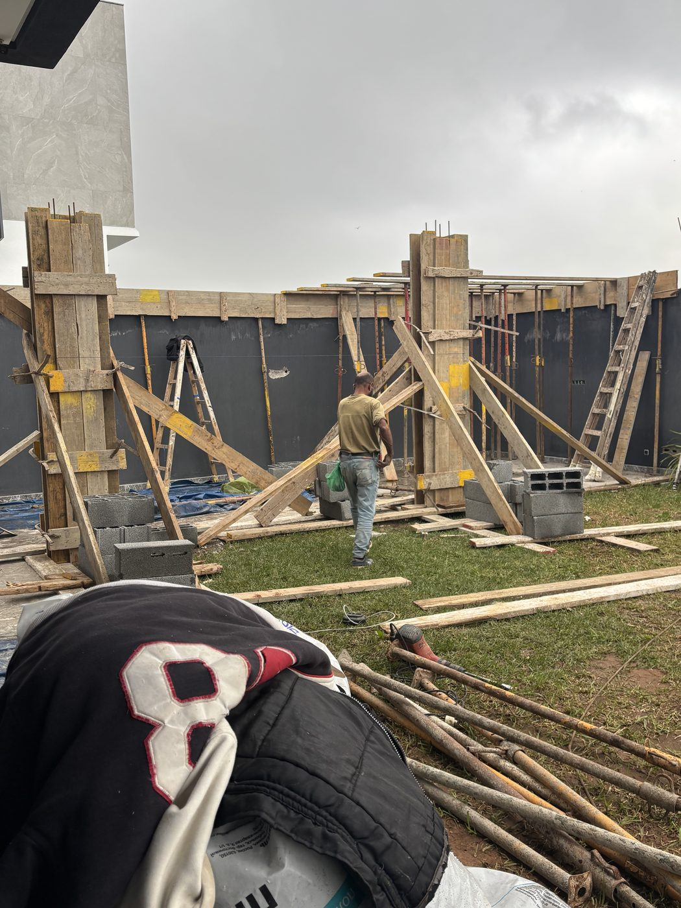
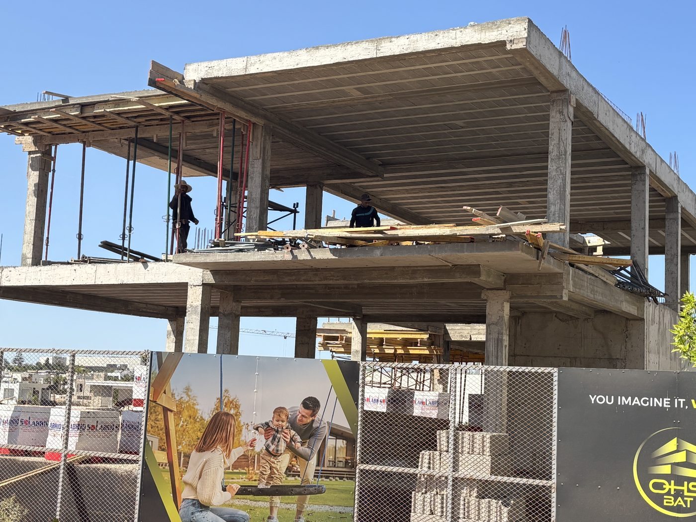
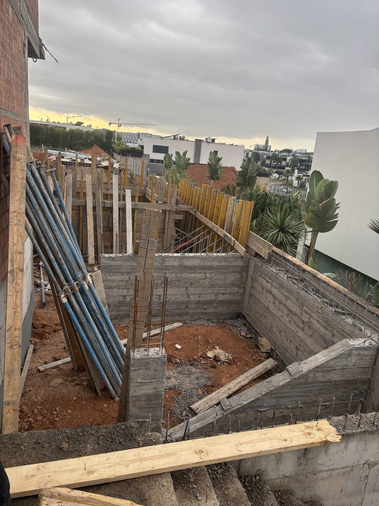
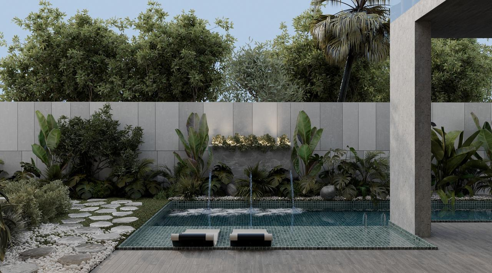
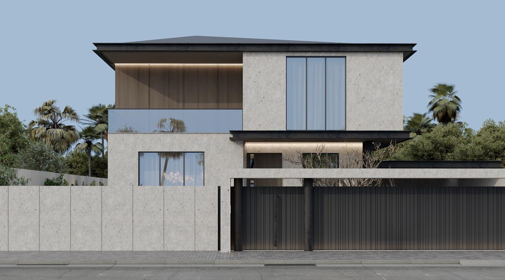
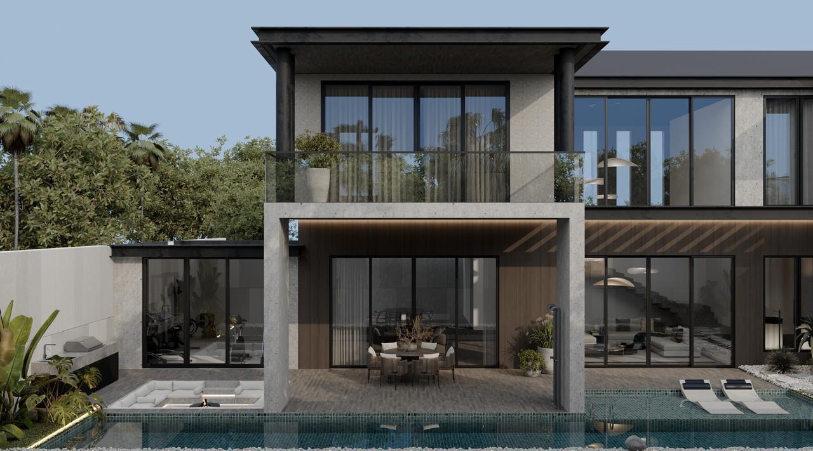
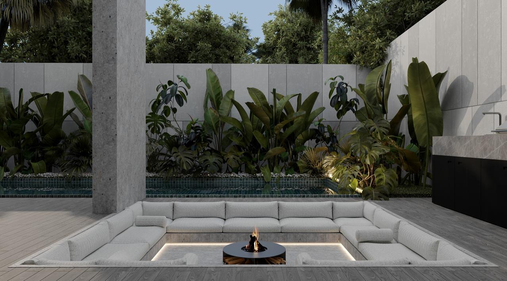

Peu de mandats, chacun suivi à la perfection. Notre preuve n'est pas le volume, c'est la rigueur vérifiable de chaque étape, du premier titre foncier jusqu'à la garantie décennale.




Voici ce sur quoi repose chaque mandat ZAF BAT, la rigueur qui rend une livraison vérifiable, quel que soit le nombre de projets déjà à notre actif. Quatre piliers, publics et opposables.
Chaque phase est nommée, jalonnée et ancrée à un acte légal, du diagnostic foncier à la garantie décennale. Aucune zone grise entre deux étapes.
Voir la méthode →Séquestre notarial à votre nom, modèle BFR issu de notre recherche, reporting mensuel certifié. Aucun décaissement sans procès-verbal signé.
Voir le pilotage →Titre foncier, permis, signature électronique Loi 53-05, décennale Loi 59-13. Nous citons chaque article parce que nous l'appliquons.
Voir la conformité →Un diagnostic technique, juridique et financier en 7 jours, signé par l'ingénieur et l'architecte. Remboursé intégralement si nous dépassons le délai.
Voir l'audit →Du premier titre foncier au permis d'habiter et à la garantie décennale, pour des mandants de la diaspora. Par respect de la confidentialité de nos clients, leurs coordonnées et les références détaillées sont communiquées en discussion privée.
Maîtrise d'ouvrage complète · 580 m² · exécution Phase 04 · livraison prévue 2026. Mandant de la diaspora, à Dubaï. Ci-dessous, les images de synthèse du projet validé.



Nous n'exposons pas un catalogue. Nous défendons chaque projet ligne par ligne, détail par détail. Voici ce que chacun démontre, indépendamment du visuel.
Mandant de la diaspora, premier projet d'envergure pour ZAF BAT. Exigence : ne pas dépendre de la présence physique du propriétaire.
Coordination à distance, sélection des entreprises classifiées, sécurisation du séquestre notarial dès le premier décaissement.
Notre capacité à structurer un mandat pour un client absent, du titre foncier au permis d'habiter, sans compromis de contrôle.
Second mandat, niveau d'exigence supérieur. Le standard de finition et la complexité technique s'élèvent par rapport au premier.
Renforcement des procédures notariées sur chaque jalon, intégration de corps d'état plus spécialisés, reporting hebdomadaire systématisé.
Une trajectoire, pas un coup d'essai. La méthode tient à l'échelle supérieure, le standard se relève à chaque mandat.
Les coordonnées des mandants et les références chiffrées détaillées sont communiquées en discussion privée, par respect de leur confidentialité.
Nous acceptons six mandats par an. Prenez date.